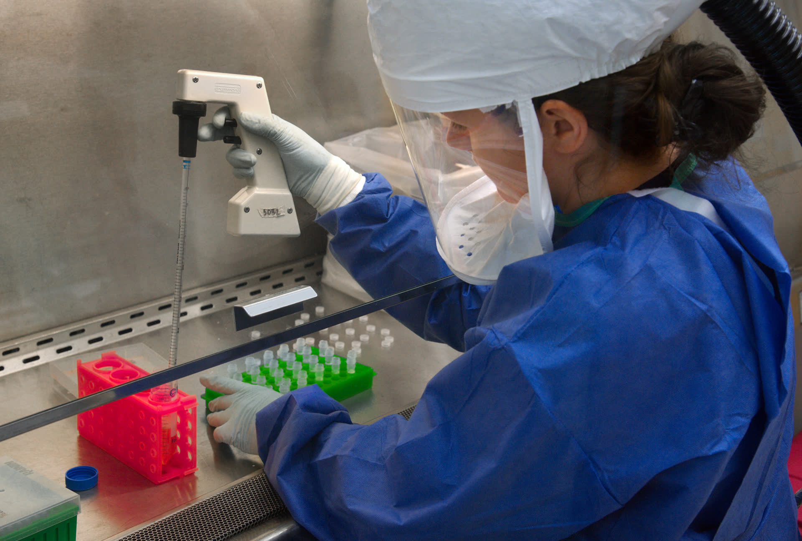
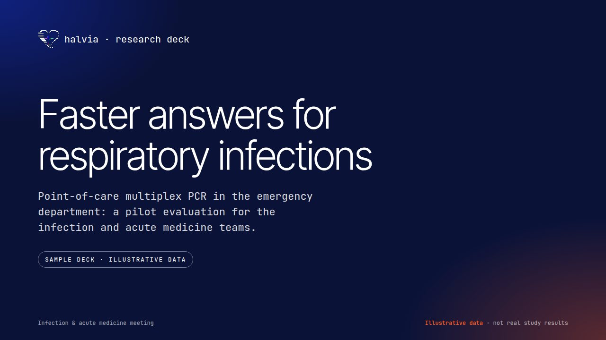
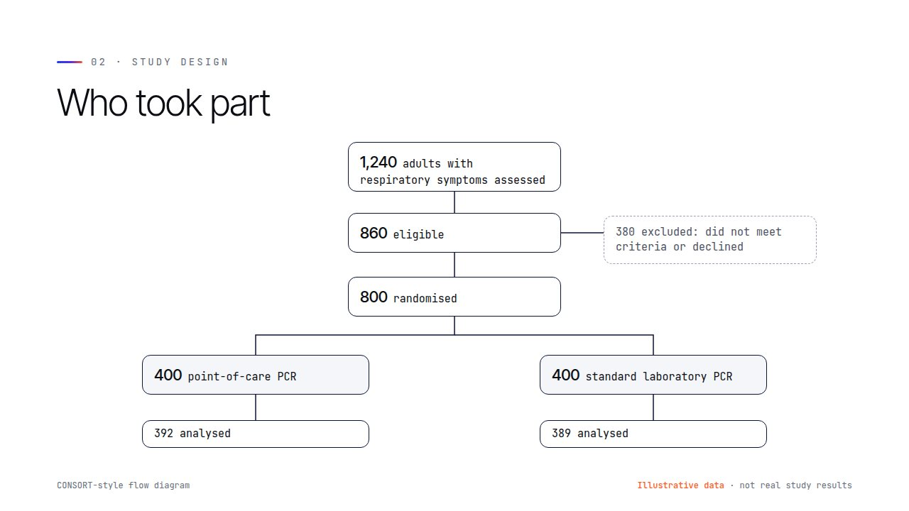
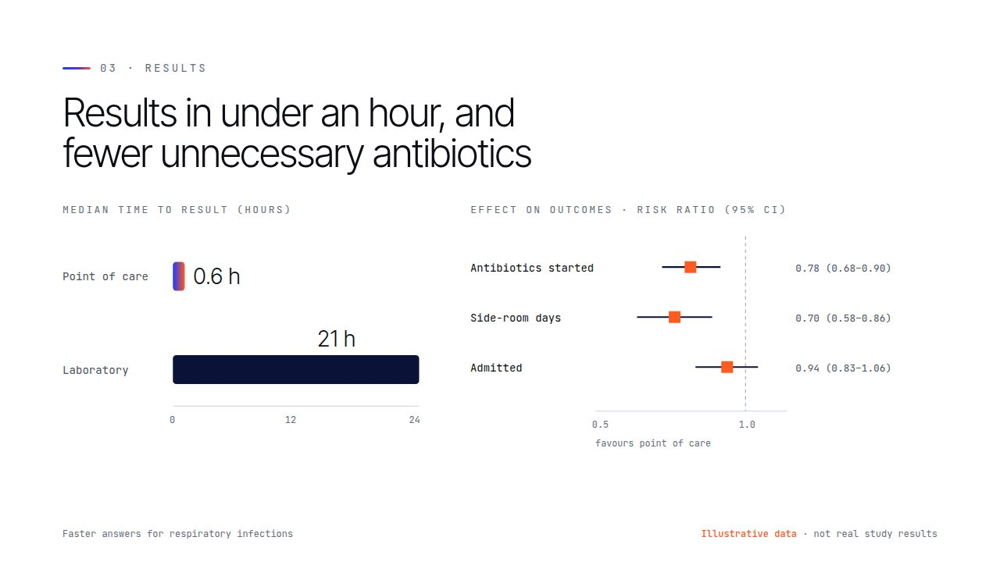
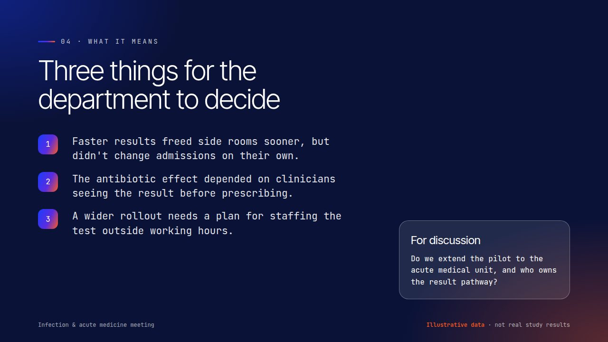
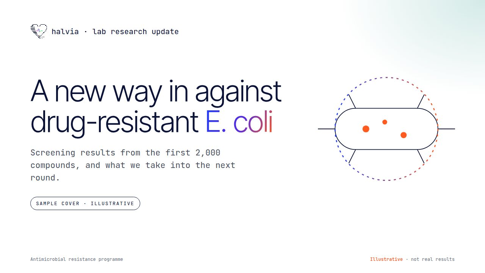
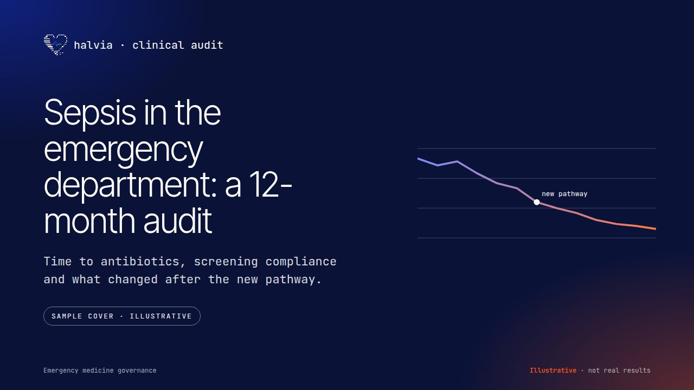

Halvia: AI systems for healthcare, by Shaun Finch
Concept AI tools I’ve designed and built for healthcare staff. Demos use synthetic data and are not for real patient care.
AI agents & automation
AI agents designed to cut admin time for care staff
I set up AI agents that take on inbox, letter and report admin, connected to the systems you already use. A person approves anything that reaches a patient or a record.
- ✓14 appointments pulled from the clinic list
- ✓3 pre-clinic letters drafted, waiting for sign-off
- ◐2 referrals missing an ECG: request sent to the GP practices
- →Summary sent to the clinic lead
Drafts the GP letter from ward notes for the doctor to check and sign.
Turns shift notes into a structured handover. Staff approve each section.
Flags bookings that may be missed and offers reminders or rebooking.
Rewrites clinic letters for patients. The clinician signs off.
Suggests codes with the sentence behind each one, for coders to accept or change.
Built with tools including Claude Claude Cowork your existing systems
Patient data. Designed so patient-identifiable information only goes into tools your information governance team has approved. Agents are designed to get the least access they need and to log every action.
Halvia bot · offline AI
An AI assistant for clinicians. The demo can run offline once loaded.
Halvia bot answers from a library of guidance and shows the passages it used. In this demo, what you type stays in your browser. A real deployment would run on-device or on approved infrastructure.
- Runs offlineThe demo can run offline once loaded.
- Built-in library31 guides based on NICE, Resuscitation Council UK and JBDS guidance, plus 240 open-access papers. Answers show their sources.
- Add your documentsSign in to add PDFs, Word files and notes to the library.
- Stays on your deviceDesigned to encrypt data locally with a passcode.
Prototype · not a medical device

Five tools · working software
Five places AI can help, today
Tools
halvia://ward/discharge-letter
From ward notes to a GP letter in one step
Turns ward notes into a structured GP letter: diagnosis, what happened, every medicine change, GP actions and what the patient was told, each line linked to its source.
Medicine changes and GP actions can get lost between ward and practice.
A drafting tool in the discharge workflow that won't send until medicines are checked.
Time per summary, letters sent within 24 hours, and medicine discrepancies found by GPs.
halvia://ward/handover
Turn rushed notes into a safe handover
Paste free-text notes and get an SBAR handover (Situation, Background, Assessment, Recommendation), a to-do list and safety flags, including an allergy clash hidden in Bed 3's notes.
Handovers vary by person and by how tired they are, and key details can sit unnoticed in a paragraph.
A tool that structures notes into SBAR, checks medicines against allergies and records what was handed over.
Handover time, items missed in audit and incidents linked to handover.
halvia://outpatients/missed-appointments
Fewer empty clinic slots, without penalising patients
Estimates who might struggle to attend, explains why, and suggests help: a reminder, a video slot or a nearer date. It's never used to overbook or move anyone down a list.
Every empty slot is time someone on the waiting list could have used.
A daily list for booking teams with reminder, video and rebooking actions built in.
Missed-appointment rate by clinic and patient group (to check it's fair) and slots refilled.
halvia://patients/plain-english
Clinic letters patients can actually read
Rewrites a clinic letter for the patient: jargon explained, medicines in a table, next steps first. It checks the reading age before and after, and can read the letter aloud.
Health information is often written at a high reading level, so patients can leave unsure what to do next.
A letter assistant that drafts a patient version alongside the GP letter.
Reading age, patient understanding and follow-up calls to the clinic.
halvia://records/clinical-coding
Help coders get from discharge summary to codes
Suggests ICD-10 codes from a discharge summary, shows the sentence behind each one, and spots ruled-out conditions so they aren't coded by mistake.
Coders read long, unstructured notes under time pressure, and backlogs build quickly.
A suggestion panel in the coder's existing system, with evidence for each code and one-click accept or reject.
Episodes coded per hour, audit accuracy and how often coders override suggestions.
Halvia Ward, full screenThe tools in one workspace with an activity log, shortcuts, print and copy. Six synthetic patients.
Open Halvia Ward ↗A concept demo. It doesn’t replace your organisation’s mandatory training or sign-off.
Open full screen ↗Decks & research documents
Research decks clinicians actually want to sit through
I design decks, case-study PDFs and posters that make the finding clear in the first minute, for grand rounds, MDTs, journal clubs, funding bids and conferences.






- Research and grand-rounds decks
- Case-study PDFs
- Clinical audit reports
- Conference posters
Samples use illustrative data. Real projects are built from your data and checked by your research team before they're presented.
Case study · CHKS
Video explainers, simple to complex
A product explainer for CHKS's AI clinical coding system, used in the NHS. It had to make a technical product feel simple and trustworthy for coding teams, and show that the coder stays in control.
- Client
- CHKS
- Product
- AI clinical coding
- Audience
- NHS clinical coding teams and managers
- My role
- Motion design and animation
- Format
- 1:12 explainer film
Work with me
Got a workflow that's eating your team's time?
Design, prototypes and AI set-up for health and research teams. Tell me about the problem and I'll come back with a short plan.